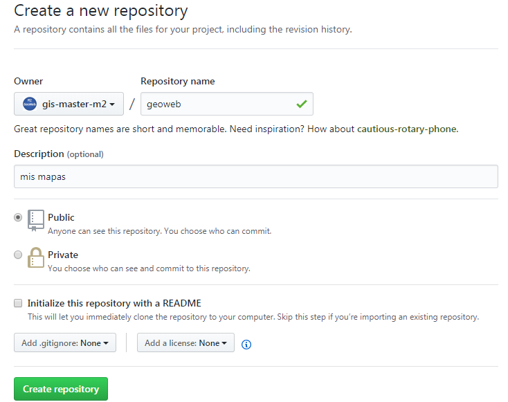

5. Taller GitHub

Recursos GitHub
-
Github Pages https://guides.github.com/features/pages/
-
Tutorial http://rogerdudler.github.io/git-guide/index.es.html
-
Wikipedia https://es.wikipedia.org/wiki/GitHub
Descripción
GitHub es un reporsitorio de código dónde podremos subir nuestros proyectos y también hosting de una pàgina web.
Ejemplo crear web site
- Requisitos Instalar cliente GIT para windows https://git-scm.com/download/win
Paso 1
- Crear usuario en: https://github.com/
Paso 2
- Creamos nuevo repo llamado geoweb

Paso 3
-
Crearemos repo des de nuestro pc Tutorial
-
Nos situamos dentro del directori geoweb de nuestro servidor y abrimos termial git (botón derecho mouse y Git Bash here)
1 2 3 4 5 6 | git init git add . git commit -m "proyecto geoweb" git remote add origin https://github.com/{tu usuario git}/geoweb.git git remote -v git push -u origin master |
Paso 4
- Verificamos en github.com que se ha subido toda la documentación y creamos arcihivo readme add Readme
Paso 5
- Vamos a la terminal de git y escribimos
1 | git pull |
Paso 6
- Abrimos archivo readme con editor VSCode y añadimos text descriptivo de nuestro proyecto
- Guardamos y desde la terminal git
1 2 3 | git add .
git commit -m "change readme"
git push -u origin master
|
Note
Cada vez que editamos debemos hacer esta operación para subir código
Paso 7
- Para convertir el repo en una página web, vamos al proyecto en github.com
- Seleccionamos optión Settings
- GitHub Pages opción master branch
Para recuperar nuestro trabajo en casa, por ejemplo
1 | git clone https://github.com/{tu usuario git}/geoweb.git |